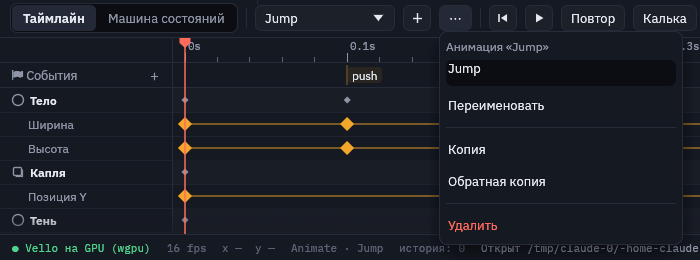
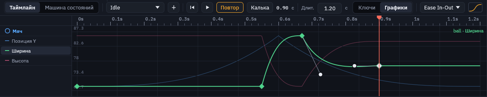
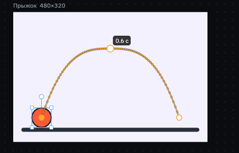
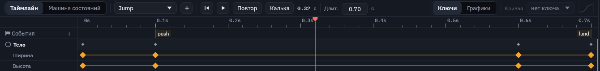
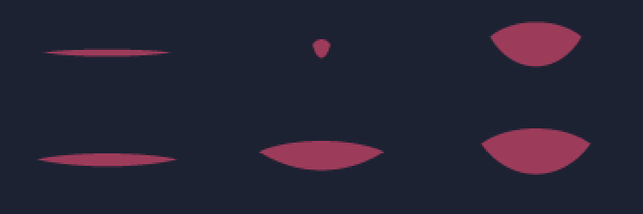

Анимация
Свойства и ключи доступны через правый клик по объекту. В фокусе анимации сохраняется таймлайн; отдельный предпросмотр справа проверяет результат без изменения рисунка и ключей.
Анимация в Motif — это ключи: в момент времени свойство имеет такое-то значение, а между ключами значение плавно меняется по кривой. В одной сцене может быть сколько угодно анимаций, например Idle, Hover и Press.
Пространства и запись ключей

- Рисование меняет сам рисунок для всех клипов: ключи там не пишутся, а холст показывает рисунок без позы. Настройка использует выбранный клип и текущий кадр: анимируемые значения записываются ключами, явная правка опор параметра меняет общую связь.
- Анимация использует тот же кадр и скрывает инструменты создания фигур. Автоключ по умолчанию включён во всех пространствах; при выключении появляется пробная поза. Ромб или «Записать позу» сохраняет её. Tab переключает рисование и анимацию.
Ромб рядом со свойством в панели показывает его состояние: пустой — свойство не анимируется, контур — анимируется, но на этом времени ключа нет, закрашенный — ключ стоит здесь. Клик по ромбу ставит или снимает ключ. K ставит ключи позиции, поворота и масштаба сразу.
Смена времени сбрасывает незаписанную пробу; переключение пространства её сохраняет. См. общий кадр и панели. Новые объекты получают ключ появления; узлы контуров можно рисовать по ключевым кадрам. Иллюстрации ниже показывают прежнюю компоновку.
Появление заливки и обводки
Переход между отсутствующим цветом (none) и заданным цветом плавно меняет прозрачность. Это работает и для ранее созданных клипов: начальный ключ none остаётся без обводки, промежуточные кадры показывают её частично, конечный — полностью. При первом включении обводки без толщины используется 2; явные ключи толщины имеют приоритет. Кривая hold сохраняет дискретное переключение.
Таймлайн

- «Таймлайн» и «Машина состояний» — что показывает нижняя панель. О машине — на странице «Машина состояний».
- Выпадающий список анимаций и «+» для новой. Если в сцене есть машина, сверху списка идут её состояния.
- «···» — меню анимации: переименовать, копия, обратная копия, удалить (ниже).
- ⏮ и ▶ — в начало и пуск. Пробел тоже запускает и останавливает анимацию.
- «Повтор» — анимация зациклена (
loopв скрипте). - «Калька» — показывает соседние позы, см. ниже.
- «Путь» — траектория выделенного объекта на холсте, см. ниже.
- Время и кадр — текущее положение. , и . шагают на кадр назад и вперёд.
- «Длит.» — длительность анимации в секундах.
- «Ключи | Графики» — дорожки ключей или графики значений.
- «Кривая» — кривая выбранного ключа (при нескольких выбранных — последнего; выбор кривой ставит её всем) и её миниатюра. Всегда стоит у правого края панели, в узком окне время показывается короче, чтобы она поместилась. Пока ключ не выбран, в списке написано «нет ключа».
Ниже идут дорожки: строка объекта со сводкой его ключей и под ней строки анимированных свойств. Видны только выделенные объекты (у выделенной группы — и анимированные объекты внутри неё); когда ничего не выделено, видны все анимированные объекты. Клик по линейке или пустому месту дорожки переводит время. Правый клик по ключу сразу открывает список кривых.
Переименовать, копировать, развернуть

Кнопка «···» рядом со списком анимаций открывает меню той анимации, что на таймлайне.
- Переименовать — новое имя в поле, затем кнопка или Enter. Состояния машины, которые играют эту анимацию, получают новое имя сами.
- Копия —
Run2сразу после оригинала: заготовка для похожей анимации. - Обратная копия —
RunBack, та же анимация задом наперёд: открыть → закрыть, присесть → встать. Ключи стоят надлительность − t, кривые отражены (ease-in становится ease-out, своя кривая — зеркальной), события переезжают так же. Удержание (hold) в обратную сторону прыгает в начале отрезка: для этого ставится ключ через 0.01 с. - Удалить — пока анимацию играет состояние машины, Motif не удалит её и назовёт это состояние.
Несколько ключей
- Выбор. Клик по ключу выбирает его, Shift+клик добавляет к выбору или убирает из него. Протяните мышью по пустому месту дорожек — рамка выберет все ключи внутри (с Shift — добавит). Серый ромбик в строке объекта — все его ключи на этом времени сразу.
- Сдвиг. Тяните любой выбранный ключ — едут все выбранные, на всех дорожках вместе.
- Растяжение. Alt+тяните крайний выбранный ключ: выбранные ключи растягиваются или сжимаются во времени, противоположный край стоит на месте. Так ускоряют или замедляют кусок анимации целиком.
- Копирование. Ctrl+C копирует выбранные ключи, Ctrl+V вставляет их от плейхеда (ключ на том же времени заменяется). Если ключи взяты у одного объекта, а выделен другой, вставка перенесёт анимацию на него. Ctrl+X вырезает.
- Удаление и кривая. Delete удаляет все выбранные ключи, а «Кривая» в панели ставит кривую им всем.
Если после сдвига два ключа одного свойства попали бы на одно время, правка не применяется и внизу появляется подсказка.
Графики

Переключатель «Ключи | Графики» в панели таймлайна показывает вместо дорожек значения свойств во времени, как редактор графиков в After Effects или Rive. Каждое числовое свойство — своя цветная кривая, растянутая на всю высоту по своему размаху, так что видно ритм всех движений сразу. Цвета и заливки графиков не имеют.
- Какое свойство править — клик по его имени слева. Оно рисуется ярко, слева видны его значения, остальные — бледно.
- Ключи тянутся в обе стороны: вбок — время, вверх и вниз — значение. С Shift во время перетаскивания движение идёт только по одной оси. Выбранные ключи этого свойства едут вместе.
- Ручки. У выбранного ключа видны ручки отрезков до соседних ключей. Это та же кривая Безье, что в редакторе кривой, только в настоящих секундах и значениях: подняли ручку выше следующего значения — получили перелёт. В скрипт пишется
cubic x1 y1 x2 y2на ключе, с которого начинается отрезок. Уhold,spring,stepsи прыгающих кривых ручек нет — выберите им другую кривую. - Рамка, Ctrl+C / Ctrl+V и Delete работают так же, как на дорожках.
Кривые
Кривая задаёт, как значение идёт от одного ключа к следующему: равномерно, с разгоном, с торможением, с перелётом или прыжками. Она хранится на ключе, с которого начинается отрезок.

- Ручки тянутся мышью. Если поднять ручку выше рамки, получится перелёт (overshoot): значение проскочит цель и вернётся. В скрипте это
cubic 0.3 0 0.6 1.2. - Библиотека — все 30 кривых с easings.net (sine, quad, cubic, quart, quint, expo, circ, back, elastic, bounce в вариантах in, out и in-out) и
steps Nдля покадровой, «дёрганой» анимации. - Базовые:
linear,ease,ease-in,ease-out,ease-in-out(по умолчанию),hold(значение держится до следующего ключа),spring.
Калька

«Калька» (onion skin) на паузе показывает соседние позы полупрозрачными: красные — раньше по времени, зелёные — позже, через 6 кадров. По ним видно траекторию и ритм движения, не запуская анимацию.
Траектория движения

В Animate у выделенного объекта, который движется, на холсте нарисован его путь за всю анимацию. Точки стоят на каждом кадре: где они гуще, объект едет медленнее, где реже — быстрее. Так видно, как кривые ключей работают на дугу прыжка или замах.
Кружки — ключи положения (x и y). Тяните кружок: плейхед встаёт на время ключа, объект едет за мышью, и ключ записывается с новыми x и y одним шагом истории. Наведите на кружок — рядом видно его время, кружок текущего ключа закрашен.
Клик по линии между ключами переводит время в эту точку пути, а протяжка от линии ставит там новый ключ положения. Путь учитывает всё, что двигает объект: родительские группы, кости, пружины. Кнопка «Путь» на таймлайне прячет и показывает траекторию.
Что можно анимировать
| В панели | В скрипте |
|---|---|
| Позиция, размер | x y w h |
| Поворот, масштаб, наклон | rot sx sy kx ky |
| Прозрачность | opacity |
| Скругление, лучи, внутренний радиус | r points inner |
| Заливка, цвет и толщина обводки | fill stroke stroke_w |
| Текст: размер, интервал, появление, волна | font-size letter-spacing reveal wave phase |
| Эффекты: размытие, высота, тень, свечение, внутренняя тень, шум | blur elevation shadow-x shadow-y shadow-blur glow inset-x inset-y inset-blur noise |
| Морфинг: сколько фигура перетекла в цели | morph |
| 3D-тело: глубина, сужение, разворот, наклон | depth taper yaw pitch |
События
Событие — именованный момент анимации, о котором должна узнать игра: шаг (звук, пыль), отрыв от земли, кадр, где удар достаёт врага. События стоят флажками в строке «⚑ События» под линейкой.

machine.msc: push — оттолкнулся, land — приземлился.- «+» в строке ставит событие на место указателя времени, двойной клик по строке — туда, где клик. Новое называется
event1. - Флажок тянется по времени. Клик переводит указатель на него.
- Правый клик по флажку: поле с именем («Переименовать» или Enter переименовывает все времена этого события), «Данные для игры», «Удалить это время» и «Удалить … целиком».
- «Данные для игры» — поля, которые игра получает вместе с событием: имя слева, значение справа (
damage=2). Число,true/falseили текст Motif узнаёт сам; «+ Поле» добавляет поле, «×» убирает, «Сохранить данные» пишет их в строку события (event hit 0.3 damage=2 crit=true). Данные общие для всех времён события, подсказка над флажком их показывает. Подробнее — в скрипте. - Во время проигрывания флажок вспыхивает, когда указатель проходит его.
В машине состояний пройденные события всплывают плашками «⚑ имя» в углу графа: видно, что и когда услышит игра. В повторяющейся анимации событие звучит на каждом круге, событие на 0 — и при входе в состояние. В скрипте это строка event push 0.1 внутри anim, игра на Rust читает их из MachinePlayer::events после каждого шага.
Морфинг
Фигура может перетекать в контуры других фигур: шар в звезду, звезда в сердце, «play» в «pause», меню в крестик. Цели — обычные фигуры сцены, их перечисляют по порядку, а ключ morph ведёт превращение: 0 — фигура как нарисована, 1 — первая цель, 2 — вторая, дробные значения — между ними.
star star_shape size 150 150 points 5 fill #ffd23f hidden
path heart_shape d "M 0 60 C -40 30 …" fill #ff5c8a hidden
ellipse blob at 150 170 size 120 120 fill #5ee0a0 morph star_shape heart_shape
anim Flow 4s loop {
blob.morph 0: 0 ease-in-out | 1: 1 | 2.6: 2 | 4: 0
}- Точки сопоставляются сами. Контуры обходятся в одну сторону и с самого подходящего начала, поэтому точки не перекрещиваются и форма не выворачивается. Острые углы остаются острыми: звезда в конце — точно звезда.
- Цвет и обводка смешиваются: заливка, цвет и толщина обводки идут от фигуры к цели. Если у одной стороны заливки нет, цвет плавно появляется или гаснет.
- Части без пары отделяются от ближайшей части другой фигуры или сливаются с ней: треугольник «play» делится на две полоски паузы, три линии меню сходятся в две линии крестика. Работают и замкнутые фигуры, и открытые линии.
- Важен только контур цели, а не её место: фигура морфится там, где стоит сама. Цели обычно прячут (
hidden). В цель годится любая фигура: прямоугольник, эллипс, звезда, многоугольник, путь, текст. - Работает со всем остальным: кости гнут уже перетёкшую фигуру, мягкое тело и верёвка берут её форму, экспорт запекает каждый кадр.

morph.msc в кадрах 0.5, 0.85, 1.45 и 2.1 с: шар на полпути к звезде, «play» делится на полоски паузы, меню сходится в крестик, звезда перетекает в сердце.Метки: что во что перетекает
Иногда точки сопоставляются не так, как задумано: рот должен открываться от уголков, а не съёживаться к середине. Тогда между соседними контурами ставят метки строкой match у той же фигуры. Метки работают и с целями morph, и с формами forms; контуры считаются с нуля: 0 — фигура сама, затем цели или формы по порядку.
path mouth d "M -40 0 C … Z" forms "M 30 -10 C … Z" match "0>1 0:0=0:0.534 0:0.5=0:0"- Шаг. Строка начинается с шага между соседними контурами:
0>1,1>2. Для нескольких шагов пишут несколько строк подряд:match "0>1 …" "1>2 …". - Пара мест
0:0.25=1:0.5: место на четверти длины куска 0 становится местом на половине куска 1. Куском называется каждая отдельная часть контура (каждоеM), считая с нуля. Место — доля длины куска от его начала, от 0 до 1, а не номер узла, поэтому метка не ломается, когда контур правят и добавляют узлы. Между метками точки распределяются равномерно. - Пара кусков
2=1: кусок 2 становится куском 1, а где какая точка, Motif подберёт сам. Это нужно, когда частей несколько и они путаются. - Точка роста
3:0.5=*или*=2:0: у куска нет пары на другой стороне, и он стягивается в своё место или вырастает из него. Без места — из середины куска. - Ошибки видны сразу. Номер куска или шага вне фигуры, кусок, который в одной метке растёт, а в другой становится другим, и места, идущие на двух кусках в разном порядке (перетекание перекрутилось бы), подчёркиваются в скрипте с объяснением. Порядок может идти и в обратную сторону: тогда контур просто обходится наоборот.

morph.msc в кадрах 0.15, 0.3 и 0.45 с. Сверху без меток: открытый рот нарисован с правого уголка, и левый уголок едет вправо, рот съёживается. Снизу с метками: уголки остаются уголками.
В редакторе это раздел «Морфинг» в панели свойств фигуры. «Добавить цель» выбирает фигуру из сцены, крестик на цели убирает её. Поле «Сколько» проверяет позу; ромб записывает ключ в анимации, как у других разрешённых свойств, а на таймлайне появляется дорожка «Морфинг».
Как анимация выглядит в скрипте
anim Hover 1.4s loop {
button.elevation 0: 4 ease-in-out-sine | 0.7: 14 ease-in-out-sine | 1.4: 4
button.y 0: 205 | 0.7: 199 | 1.4: 205
back.blur 0: 14 | 0.7: 22 | 1.4: 14
}Одна строка — одно свойство: объект.свойство время: значение [кривая] | время: значение …. Кривая после значения действует до следующего ключа. Подробнее — в разделе «Скрипт сцены».
Совет для интерфейса. Делайте по анимации на каждое состояние кнопки (Idle, Hover, Press) и анимируйте «Высоту»: тень будет вести себя согласованно на всём экране, потому что свет у сцены общий.